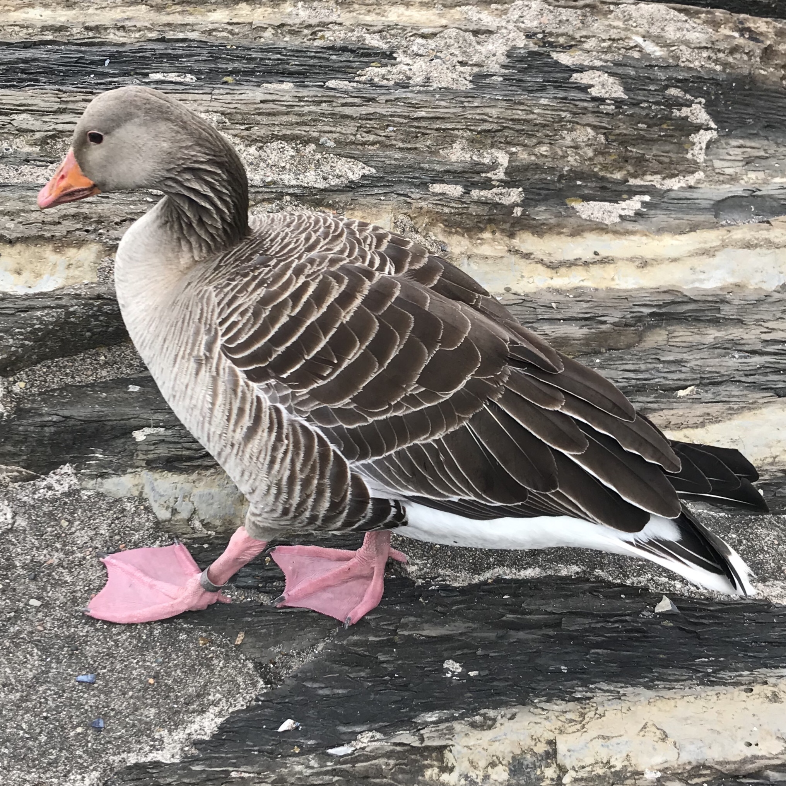

Anser anser — Une grande oie sauvage à la présence régionale très inégale
Identité et identification
L’Oie cendrée, Anser anser, appartient aux Anatidés, dans l’ordre des Ansériformes; son nom scientifique est conservé par AviList 2026. Ses appellations arabes évoquent une oie grise ou cendrée. C’est un grand oiseau massif, au cou et à la tête robustes, au plumage brun-gris bordé de clair et aux pattes roses. Son gros bec peut être orange ou rose selon la population: sa couleur seule ne suffit pas à l’identifier avec certitude.
Âge, sexe et espèces proches
Les sexes ont un plumage semblable, le mâle étant généralement plus grand; une photographie isolée sans comparaison ne permet guère de les distinguer. Les jeunes montrent certains dessins ventraux moins développés. En vol, l’avant de l’aile gris pâle contraste avec les rémiges plus sombres. L’Oie rieuse adulte possède du blanc à la base du bec et de fortes barres noires sur le ventre, mais ces caractères sont incomplets chez les jeunes. Il faut donc également examiner la tête, le bec et l’aile. Oies domestiques, oiseaux féralisés et hybrides peuvent ressembler à des Oies cendrées sauvages; l’aspect et le lieu ne prouvent pas, à eux seuls, une origine naturelle.
Habitats, alimentation et comportement
L’espèce fréquente lacs d’eau douce, marais et plaines inondables, ainsi que prairies et cultures proches. Son alimentation est surtout végétale: herbes, végétation aquatique, céréales et plantes cultivées disponibles. Les groupes quittent parfois l’eau pour pâturer, puis y reviennent se reposer ou dormir. Les familles restent associées et rejoignent d’autres oiseaux hors reproduction; près du nid, le couple défend son espace. Une oie familière dans un bassin de jardin ne constitue pas automatiquement une observation migratoire.
Reproduction et cycle de vie
La reproduction couvre une vaste aire eurasiatique. Le nid est installé au sol, près de l’eau et de la végétation, et reçoit habituellement cinq à sept œufs. La femelle couve, le mâle contribuant à la protection. Les oisons quittent rapidement le nid pour suivre les parents et se nourrir. Le renouvellement des plumes des ailes entraîne une période d’incapacité de vol, durant laquelle des eaux sûres deviennent particulièrement importantes. Les stratégies sédentaires ou migratrices diffèrent selon les populations; la présence d’oies résidentes en Europe ne signifie pas que les arrivantes en Irak le soient également.
Répartition et saisonnalité dans le monde arabe
Dans le monde arabe, l’Irak occupe une place importante dans l’aire orientale d’hivernage, notamment ses marais et autres zones humides. Des synthèses scientifiques documentent aussi une reproduction locale limitée dans le sud du pays: une seule étiquette saisonnière ne décrit donc pas tous les individus. L’hivernage atteint l’extrême nord de l’Afrique, avec une régularité et des effectifs variables. Au Qatar, l’espèce est considérée comme une hivernante rare; au Liban, le guide de 2026 confirme son statut occasionnel, non celui d’une oie hivernante familière. Novembre permet de rechercher les arrivées dans les régions d’hivernage sans garantir leur présence sur chaque lac arabe. Date, lieu, comportement et origine possible méritent d’être documentés loin des secteurs habituels.
Rôle écologique et conservation
Son statut mondial est «Préoccupation mineure», LC, mais la situation varie entre populations. Le pâturage relie milieux terrestres et zones humides. L’utilisation des cultures peut provoquer des conflits agricoles dans certaines régions, sans impliquer des dégâts partout. Assèchement, pollution, dérangements et chasse incontrôlée demandent une gestion locale étayée. Préserver des dortoirs calmes reliés aux zones d’alimentation est préférable aux poursuites photographiques. Le statut mondial ne fixe ni la légalité ni les périodes de chasse d’un pays.
Références
AviList 2026 — Anser anser.
BTO — BirdFacts: Greylag Goose.
The Wildlife Trusts — Greylag Goose.
Mediterranean Waterbirds Network — Greylag Goose identification account.
Wetlands International — regional breeding-waterbird population estimates, 2017–2018, Iraq synthesis.
Qatar eNature — Greylag Goose.
Ramadan-Jaradi and Itani — Birds of Lebanon: A Photographic Guide to 409 Species, UNDP, second edition, 2026; Ramadan-Jaradi and colleagues — Sandgrouse 42, 2020.
Photo : Dag Endresen — CC0-1.0.